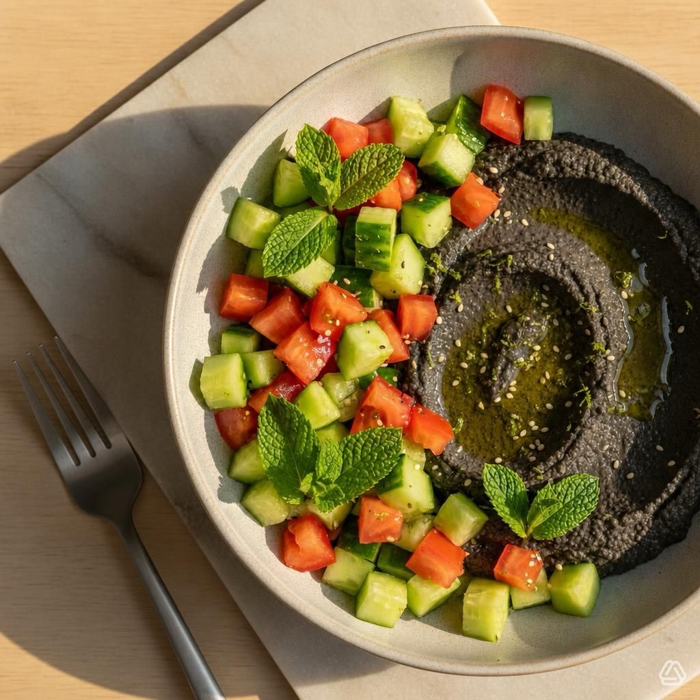

Bowl di cetrioli e pomodori a quadrotti con hummus di ceci neri al lime e menta
Una bowl fresca e colorata, perfetta per l'estate: cetrioli croccanti e pomodori dolci incontrano un hummus di ceci neri profumato al lime e menta.
Ingredienti
- Per la bowl:
- 1 cetriolo grande (o 2 piccoli), sbucciato a piacere e tagliato a cubetti (~2 cm)
- 2 pomodori maturi (tipo cuore di bue o datterini grandi), tagliati a cubetti (~2 cm)
- 8-10 foglie di menta fresca spezzettate
- 1-2 cucchiai di olio extravergine d'oliva
- Sale e pepe q.b.
- 1/2 cucchiaino di succo di lime (opzionale)
- Semi di sesamo o za'atar per guarnire (opzionale)
- Per l'hummus di ceci neri al lime:
- 240 g ceci neri cotti (scolati) — se usi secchi, ammolla e cuoci prima
- 2-3 cucchiai di olio extravergine d'oliva (più q.b. per finire)
- 1 spicchio d'aglio piccolo (opzionale, o 1/2 se preferisci leggero)
- Succo di 1 lime (circa 1-2 cucchiai) + scorza grattugiata di 1/2 lime (opzionale)
- 2-3 cucchiai di acqua o liquido di cottura per regolare consistenza
- 1/2 cucchiaino di cumino in polvere (facoltativo)
- Sale q.b.
- Pepe nero q.b.
👨🍳 Preparazione
- Prepara la bowl: unisci cetriolo e pomodoro in una ciotola, aggiungi menta, olio, sale, pepe e il mezzo cucchiaino di succo di lime. Mescola delicatamente e lascia riposare mentre fai l'hummus.
- Hummus: in un frullatore o robot da cucina metti i ceci neri, l'aglio (se lo usi), il succo di lime, la scorza, il cumino, sale e pepe. Frulla aggiungendo l'olio a filo. Se troppo denso, aggiungi 1-2 cucchiai di acqua o liquido di cottura fino a ottenere una crema liscia. Assaggia e regola sale/lime. Deve risultare cremoso ma non troppo liquido.
- Assembla: disponi il composto di cetrioli e pomodori nelle ciotole, aggiungi una generosa cucchiaiata di hummus di ceci neri al centro. Guarnisci con semi di sesamo o za'atar se desideri.
- Servi: consuma subito per godere della freschezza, o conserva in frigorifero per massimo 2 ore.
Cucumber and Tomato Cube Bowl with Black Chickpea Lime and Mint Hummus
A fresh and colorful bowl, perfect for summer: crunchy cucumbers and sweet tomatoes meet a fragrant black chickpea hummus with lime and mint.
Ingredients
- For the bowl:
- 1 large cucumber (or 2 small), peeled if desired and cut into cubes (~2 cm)
- 2 ripe tomatoes (oxheart or large cherry type), cut into cubes (~2 cm)
- 8-10 fresh mint leaves, torn
- 1-2 tablespoons extra virgin olive oil
- Salt and pepper to taste
- 1/2 teaspoon lime juice (optional)
- Sesame seeds or za'atar for garnish (optional)
- For the black chickpea lime hummus:
- 240 g cooked black chickpeas (drained) — if using dried, soak and cook first
- 2-3 tablespoons extra virgin olive oil (plus more to finish)
- 1 small garlic clove (optional, or 1/2 for a lighter taste)
- Juice of 1 lime (about 1-2 tablespoons) + grated zest of 1/2 lime (optional)
- 2-3 tablespoons water or cooking liquid to adjust consistency
- 1/2 teaspoon ground cumin (optional)
- Salt to taste
- Black pepper to taste
👨🍳 Preparation
- Prepare the bowl: combine cucumber and tomato in a bowl, add mint, oil, salt, pepper and the half teaspoon of lime juice. Mix gently and let rest while you make the hummus.
- Hummus: in a blender or food processor place the black chickpeas, garlic (if using), lime juice, zest, cumin, salt and pepper. Blend adding oil in a thin stream. If too thick, add 1-2 tablespoons of water or cooking liquid until smooth. Taste and adjust salt/lime. It should be creamy but not too runny.
- Assemble: arrange the cucumber and tomato mixture in bowls, add a generous dollop of black chickpea hummus in the center. Garnish with sesame seeds or za'atar if desired.
- Serve: enjoy immediately for freshness, or refrigerate for up to 2 hours.
Bowl de Pepino y Tomate en Cubos con Hummus de Garbanzos Negros al Limón y Menta
Un bowl fresco y colorido, perfecto para el verano: pepinos crujientes y tomates dulces se encuentran con un hummus de garbanzos negros perfumado con limón y menta.
Ingredientes
- Para el bowl:
- 1 pepino grande (o 2 pequeños), pelado si se desea y cortado en cubos (~2 cm)
- 2 tomates maduros (tipo corazón de buey o cherry grandes), cortados en cubos (~2 cm)
- 8-10 hojas de menta fresca, desmenuzadas
- 1-2 cucharadas de aceite de oliva virgen extra
- Sal y pimienta al gusto
- 1/2 cucharadita de zumo de lima (opcional)
- Semillas de sésamo o za'atar para decorar (opcional)
- Para el hummus de garbanzos negros al limón:
- 240 g garbanzos negros cocidos (escurridos) — si usas secos, remoja y cuece primero
- 2-3 cucharadas de aceite de oliva virgen extra (más para terminar)
- 1 diente de ajo pequeño (opcional, o 1/2 si prefieres más ligero)
- Zumo de 1 lima (unas 1-2 cucharadas) + ralladura de 1/2 lima (opcional)
- 2-3 cucharadas de agua o caldo de cocción para regular la consistencia
- 1/2 cucharadita de comino en polvo (opcional)
- Sal al gusto
- Pimienta negra al gusto
👨🍳 Preparación
- Preparar el bowl: mezcla el pepino y el tomate en un bol, añade menta, aceite, sal, pimienta y la media cucharadita de zumo de lima. Mezcla suavemente y deja reposar mientras preparas el hummus.
- Hummus: en una batidora o robot de cocina pon los garbanzos negros, el ajo (si lo usas), el zumo de lima, la ralladura, el comino, sal y pimienta. Tritura añadiendo el aceite en hilo. Si está demasiado espeso, añade 1-2 cucharadas de agua o caldo de cocción hasta obtener una crema lisa. Prueba y ajusta sal/lima. Debe quedar cremoso pero no demasiado líquido.
- Montar: dispón la mezcla de pepino y tomate en los bowls, añade una generosa cucharada de hummus de garbanzos negros en el centro. Decora con semillas de sésamo o za'atar si lo deseas.
- Servir: consume inmediatamente para disfrutar de la frescura, o conserva en el frigorífico como máximo 2 horas.
Bowl de Pepino e Tomate em Cubos com Hummus de Grãos-de-Bico Pretos ao Limão e Hortelã
Uma bowl fresca e colorida, perfeita para o verão: pepinos crocantes e tomates doces encontram um hummus de grãos-de-bico pretos perfumado com limão e hortelã.
Ingredientes
- Para a bowl:
- 1 pepino grande (ou 2 pequenos), descascado se desejar e cortado em cubos (~2 cm)
- 2 tomates maduros (coração de boi ou cherry grandes), cortados em cubos (~2 cm)
- 8-10 folhas de hortelã fresca, desfeitas
- 1-2 colheres de sopa de azeite de oliva virgem extra
- Sal e pimenta a gosto
- 1/2 colher de chá de sumo de lima (opcional)
- Sementes de sésamo ou za'atar para guarnição (opcional)
- Para o hummus de grãos-de-bico pretos ao limão:
- 240 g grãos-de-bico pretos cozidos (escorridos) — se usar secos, deixe de molho e cozinhe primeiro
- 2-3 colheres de sopa de azeite de oliva virgem extra (mais para finalizar)
- 1 dente de alho pequeno (opcional, ou 1/2 se preferir mais suave)
- Sumo de 1 lima (cerca de 1-2 colheres de sopa) + raspa de 1/2 lima (opcional)
- 2-3 colheres de sopa de água ou caldo de cozedura para regular a consistência
- 1/2 colher de chá de cominho em pó (opcional)
- Sal a gosto
- Pimenta preta a gosto
👨🍳 Preparação
- Preparar a bowl: misture o pepino e o tomate numa tigela, adicione hortelã, azeite, sal, pimenta e a meia colher de chá de sumo de lima. Misture delicadamente e deixe repousar enquanto faz o hummus.
- Hummus: numa liquidificadora ou robot de cozinha coloque os grãos-de-bico pretos, o alho (se usar), o sumo de lima, a raspa, o cominho, sal e pimenta. Triture adicionando o azeite em fio. Se estiver demasiado espesso, adicione 1-2 colheres de sopa de água ou caldo de cozedura até obter um creme liso. Prove e ajuste sal/lima. Deve ficar cremoso mas não demasiado líquido.
- Montar: disponha a mistura de pepino e tomate nas tigelas, adicione uma generosa colherada de hummus de grãos-de-bico pretos ao centro. Guarneça com sementes de sésamo ou za'atar se desejar.
- Servir: consuma de imediato para aproveitar a frescura, ou conserve no frigorífico por no máximo 2 horas.
Gurken-Tomaten-Würfel-Bowl mit Schwarzem Kichererbsen-Limetten-Minz-Hummus
Eine frische und farbenfrohe Bowl, perfekt für den Sommer: knackige Gurken und süße Tomaten treffen auf einen duftenden schwarzen Kichererbsen-Hummus mit Limette und Minze.
Zutaten
- Für die Bowl:
- 1 große Gurke (oder 2 kleine), geschält nach Belieben und in Würfel geschnitten (~2 cm)
- 2 reife Tomaten (Ochsenherz oder große Cherry-Tomaten), in Würfel geschnitten (~2 cm)
- 8-10 frische Minzblätter, zerrissen
- 1-2 Esslöffel natives Olivenöl extra
- Salz und Pfeffer nach Geschmack
- 1/2 Teelöffel Limettensaft (optional)
- Sesamsamen oder Za'atar zum Garnieren (optional)
- Für den schwarzen Kichererbsen-Limetten-Hummus:
- 240 g gekochte schwarze Kichererbsen (abgetropft) — bei getrockneten vorher einweichen und kochen
- 2-3 Esslöffel natives Olivenöl extra (plus mehr zum Servieren)
- 1 kleine Knoblauchzehe (optional, oder 1/2 für einen leichteren Geschmack)
- Saft von 1 Limette (ca. 1-2 Esslöffel) + geriebene Schale von 1/2 Limette (optional)
- 2-3 Esslöffel Wasser oder Kochflüssigkeit zur Konsistenzanpassung
- 1/2 Teelöffel gemahlener Kreuzkümmel (optional)
- Salz nach Geschmack
- Frisch gemahlener schwarzer Pfeffer nach Geschmack
👨🍳 Zubereitung
- Die Bowl zubereiten: Gurke und Tomate in einer Schüssel vermischen, Minze, Öl, Salz, Pfeffer und den halben Teelöffel Limettensaft hinzufügen. Vorsichtig mischen und ruhen lassen, während der Hummus zubereitet wird.
- Hummus: schwarze Kichererbsen, Knoblauch (falls verwendet), Limettensaft, Schale, Kreuzkümmel, Salz und Pfeffer in einen Mixer oder eine Küchenmaschine geben. Unter Zugabe von Öl im Strahl pürieren. Bei Bedarf 1-2 Esslöffel Wasser oder Kochflüssigkeit hinzufügen, bis eine glatte Creme entsteht. Abschmecken und Salz/Limette nach Bedarf anpassen. Er sollte cremig, aber nicht zu flüssig sein.
- Servieren: Gurken-Tomaten-Mischung in Schalen verteilen, eine großzügige Kugel schwarzen Kichererbsen-Hummus in die Mitte geben. Mit Sesamsamen oder Za'atar garnieren.
- Genießen: sofort zum Frischeerlebnis servieren oder bis zu 2 Stunden im Kühlschrank aufbewahren.
Μπολ με Κύβους Αγγουριού και Ντομάτας με Χούμους Μαύρων Ρεβιθιών με Λάιμ και Μέντα
Ένα δροσερό και πολύχρωμο μπολ, τέλειο για το καλοκαίρι: τραγανά αγγούρια και γλυκιές ντομάτες συναντούν ένα αρωματικό χούμους μαύρων ρεβιθιών με λάιμ και μέντα.
Συστατικά
- Για το μπολ:
- 1 μεγάλο αγγούρι (ή 2 μικρά), ξεφλουδισμένο αν θέλετε και κομμένο σε κύβους (~2 εκ)
- 2 ώριμες ντομάτες (τύπου βοδινής καρδιάς ή μεγάλα ντοματίνια), κομμένες σε κύβους (~2 εκ)
- 8-10 φύλλα φρέσιας μέντας, σκισμένα
- 1-2 κουταλιές της σούπας έξτρα παρθένο ελαιόλαδο
- Αλάτι και πιπέρι κατά βούληση
- 1/2 κουταλάκι του γλυκού χυμό λάιμ (προαιρετικά)
- Σπόροι σουσαμιού ή za'atar για γαρνιτούρα (προαιρετικά)
- Για το χούμους μαύρων ρεβιθιών με λάιμ:
- 240 γραμ. μαγειρεμένα μαύρα ρεβίθια (σουρωμένα) — αν χρησιμοποιείτε ξηρά, μουλιάστε και μαγειρέψτε πρώτα
- 2-3 κουταλιές της σούπας έξτρα παρθένο ελαιόλαδο (συν επιπλέον για σερβίρισμα)
- 1 μικρή σκελίδα σκόρδο (προαιρετικά, ή 1/2 για ελαφρύτερη γεύση)
- Χυμός 1 λάιμ (περίπου 1-2 κουταλιές της σούπας) + ξύσμα 1/2 λάιμ (προαιρετικά)
- 2-3 κουταλιές της σούπας νερό ή ζωμό μαγειρέματος για ρύθμιση πυκνότητας
- 1/2 κουταλάκι του γλυκού κύμινο σε σκόνη (προαιρετικά)
- Αλάτι κατά βούληση
- Μαύρο πιπέρι κατά βούληση
👨🍳 Εκτέλεση
- Προετοιμασία του μπολ: αναμείξτε το αγγούρι και τη ντομάτα σε ένα μπολ, προσθέστε μέντα, ελαιόλαδο, αλάτι, πιπέρι και το μισό κουταλάκι χυμό λάιμ. Ανακατέψτε απαλά και αφήστε το να ξεκουραστεί ενώ ετοιμάζετε το χούμους.
- Χούμους: βάλτε τα μαύρα ρεβίθια, το σκόρδο (αν το χρησιμοποιείτε), το χυμό λάιμ, το ξύσμα, το κύμινο, αλάτι και πιπέρι σε ένα μπλέντερ ή μίξερ. Πολτοποιήστε προσθέτοντας ελαιόλαδο σε λεπτή στρώση. Αν είναι πολύ πηχτό, προσθέστε 1-2 κουταλιές νερό ή ζωμό μέχρι να γίνει λείο. Δοκιμάστε και ρυθμίστε αλάτι/λάιμ. Πρέπει να είναι κρεμώδες αλλά όχι πολύ ρευστό.
- Συναρμολόγηση: τοποθετήστε το μείγμα αγγουριού-ντομάτας στα μπολ, προσθέστε μια γενναία κουταλιά χούμους μαύρων ρεβιθιών στο κέντρο. Γαρνίρετε με σουσάμι ή za'atar αν θέλετε.
- Σερβίρισμα: απολαύστε αμέσως για φρεσκάδα, ή διατηρήστε στο ψυγείο για έως 2 ώρες.